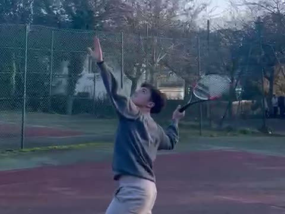
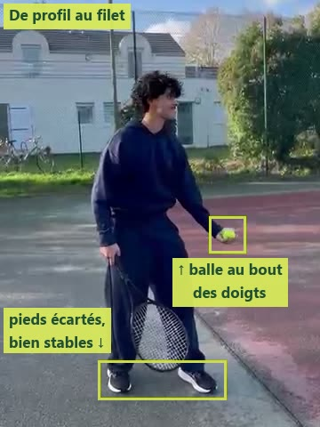
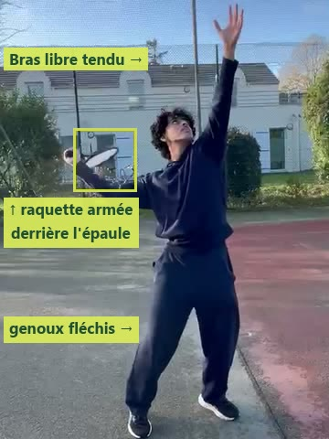
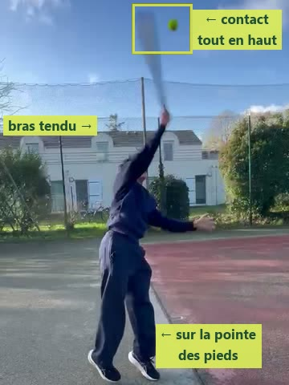
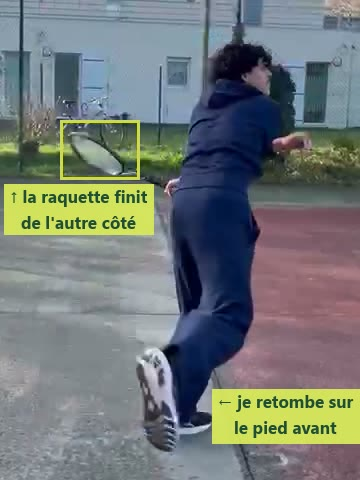
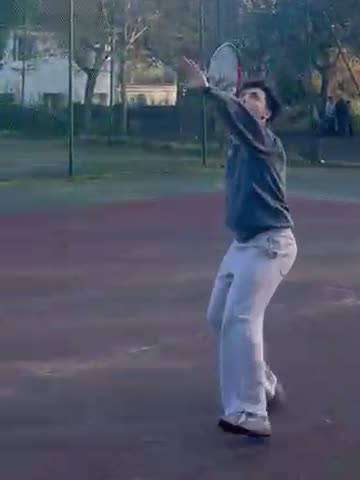
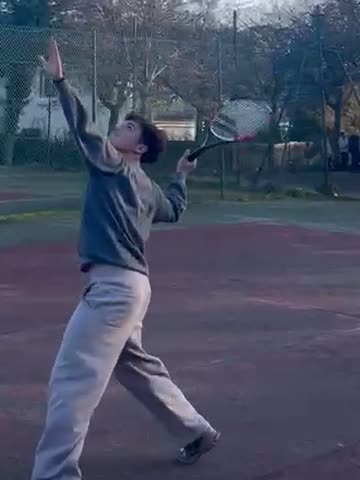
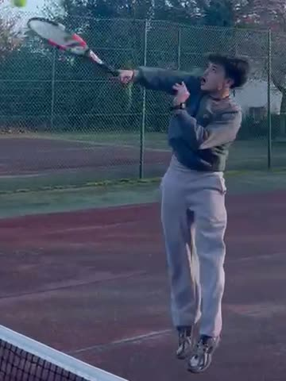
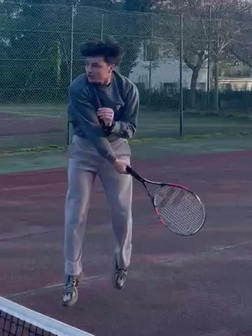

Deux gestes, un projet de jeu
Le service pour construire le point, le smash pour le conclure. Ce site t'accompagne avant et après tes séances d'EPS pour progresser sur ces deux gestes, à ton rythme.
Commencer par le service →Le tennis en EPS
Le tennis est un sport d'opposition duelle : deux joueurs s'affrontent de chaque côté d'un filet. Le but est de faire rebondir la balle dans le terrain adverse de façon à ce que l'adversaire ne puisse pas la renvoyer. En EPS, il fait partie du champ d'apprentissage 4 : « Conduire et maîtriser un affrontement collectif ou interindividuel ».
Pendant ce cycle, tu travailles deux gestes clés : le service, pour engager et construire ton point, et le smash, pour le conclure sur une balle haute.
Le matériel à prévoir
- Une tenue de sport adaptée à la météo (survêtement, sweat : on joue dehors).
- Des chaussures de sport bien lacées, qui tiennent le pied.
- Une bouteille d'eau : on s'hydrate entre les exercices.
- Raquettes et balles : prêtées par le collège. Si tu as ta raquette, tu peux l'apporter.
- Un téléphone, une tablette ou un ordinateur pour consulter ce site avant et après la séance.
- Des cheveux attachés et pas de bijoux qui gênent pendant le jeu.
Choisis ton apprentissage

Apprentissage 2Le smash
Appliquer les principes d'efficacité pour conclure le point.
DécouvrirComment utiliser ce site ?
Je regarde
Je visionne le geste en vidéo, autant de fois que nécessaire.
Je teste
Je vérifie ma compréhension avec les mini-jeux, puis je reproduis le geste en séance.
Je m'évalue
Après la séance, je coche les critères de réussite que j'ai atteints.
Le service
Le service est le premier coup du point : bien maîtrisé, il permet de prendre l'avantage dès l'engagement.
01Regarde le geste
02Décompose le geste

1Position
Profil au filet, pied avant pointé vers le poteau opposé.

2Armé
Bras de lancer tendu, coude de frappe fléchi sous l'épaule.

3Frappe
Extension du bras, contact au-dessus de la tête.

4Accompagnement
Le geste se poursuit, retour en position d'attente.
03Critères de réussite
04Erreur fréquente
Lancer irrégulier ou trop en arrière → la frappe se fait trop tard, la balle part souvent dans le filet. Correction : s'entraîner au lancer seul, sans raquette, jusqu'à ce qu'il retombe toujours au même endroit.
Page réalisée par Corentin Bernier (tournage, voix off, montage, images annotées et jeux du service).
Le smash
Le smash se joue au-dessus de la tête, sur une balle haute de l'adversaire. Il n'a de sens que relié à une bonne intention tactique : conclure le point.
01Regarde le geste
02Décompose le geste

1Placement
Je me mets de profil en pas chassés pour me placer sous la balle.

2Armé
Bras libre pointé vers la balle, raquette armée derrière la tête.

3Frappe
Contact haut, bras tendu, légèrement devant le corps.

4Transfert
Le poids du corps accompagne la balle vers l'avant et le bas.
03Critères de réussite
04Intention tactique
Le smash sert à finir le point après une balle haute et courte de l'adversaire (lob raté). On privilégie le placement loin de l'adversaire plutôt que la puissance pure : un smash bien placé gagne plus souvent qu'un smash très fort au centre.
Page réalisée par Tom Agnan.
Exercices
Des mini-jeux pour vérifier que tu as bien compris chaque geste avant de le reproduire en séance. Tu peux recommencer autant de fois que tu veux.
01Le service : remets les étapes dans l'ordre
Jeu réalisé par Corentin Bernier
Les 4 étapes du service sont mélangées. Fais-les glisser (ou utilise les flèches ↑ ↓) pour les remettre dans l'ordre, puis clique sur Vérifier.
02Le service, niveau expert : 8 étapes sans les noms
Jeu réalisé par Corentin Bernier
Plus difficile : le service est découpé en 8 étapes et leurs noms sont cachés. Lis bien chaque description et remets-les dans l'ordre. Les indices n'apparaissent qu'à partir du 2ᵉ essai.
03Le smash : efficace ou pas efficace ?
Jeu réalisé par Tom Agnan
Pour chaque situation, choisis si le smash est efficace ou pas efficace, puis clique sur Vérifier. Quand tu as tout bon, clique sur Nouvelles situations : 6 nouvelles situations sont tirées au sort parmi 18.
Argumentaire
Selon le Bulletin officiel n°31 du 30 juillet 2020 (programme du cycle 4), notre proposition pédagogique s'inscrit dans le champ d'apprentissage 4 « Conduire et maîtriser un affrontement collectif ou interindividuel », au cycle 4, en classe de 4ᵉ, à travers l'activité tennis. Elle mobilise deux compétences du socle commun de connaissances, de compétences et de culture : le domaine 1 « Des langages pour penser et communiquer », via l'enjeu « acquérir et stabiliser des techniques spécifiques pour construire et mettre en œuvre un projet de jeu afin de battre l'adversaire » (geste travaillé : le service), et le domaine 5 « Les représentations du monde et l'activité humaine », via l'enjeu « s'approprier des principes d'efficacité des techniques et tactiques sportives » (geste travaillé : le smash).
Sur le plan des apprentissages en EPS, notre site privilégie la dimension motrice (acquisition et stabilisation du geste technique), tout en développant une dimension méthodologique (observation d'un modèle, auto-évaluation à partir de critères de réussite).
D'un point de vue de la transposition didactique, en suivant le modèle SAMR de Ruben Puentedura, notre site se situe au niveau de la Modification : le numérique ne se contente pas de remplacer une fiche papier, il transforme la tâche en permettant à l'élève de choisir son parcours d'apprentissage, de visionner le geste à son rythme et de s'auto-évaluer en autonomie entre les séances.
En termes d'apprentissage psychomoteur, en référence à la taxonomie de Berthiaume et Daële (2013), notre dispositif vise essentiellement les niveaux 1 (Perception, à travers la découverte du geste en vidéo) et 2 (Reproduction, préparée par des exercices interactifs qui permettent à l'élève de vérifier sa compréhension du geste avant de le reproduire en séance), le niveau 3 (Perfectionnement) restant un objectif à plus long terme en classe.
Enfin, notre site correspond à un dispositif de type présentiel augmenté, les contenus numériques (vidéos, fiches techniques, critères de réussite) venant enrichir, en amont et en aval des séances, l'apprentissage réalisé principalement en présentiel avec l'enseignant.
Binôme : Corentin Bernier & Tom Agnan — Cycle 4, classe de 4ᵉ
Sources et bilan
Textes institutionnels
- Programme d'EPS cycle 4 — BO n°31 du 30 juillet 2020 (BOEN spécial n°11 du 26 novembre 2015)
- Éduscol — « Enjeux d'apprentissage du CA4 », mars 2016
- Socle commun de connaissances, de compétences et de culture — domaines 1 et 5
Modèles pédagogiques
- Modèle SAMR — Ruben Puentedura
- Taxonomie de Berthiaume & Daële (2013)
Technique tennis
- Fiches techniques service / smash — sites spécialisés tennis
Provenance des images et des vidéos
- Vidéos et photos : toutes filmées par nous (Corentin Bernier et Tom Agnan), sur un court de tennis extérieur, en novembre 2026. Les personnes filmées sont les auteurs du site. Les images fixes des étapes sont extraites de nos vidéos.
- Logo : réalisé par nous avec Canva.
- Polices : Fraunces et Inter (licence libre SIL Open Font License), hébergées avec le site.
- Aucune image ou vidéo n'a été récupérée sur Internet.
Captation, montage et outils
Avec l'accord de notre enseignant, nous avons relevé le défi de réaliser le site et les montages avec une intelligence artificielle, à la place des logiciels vus en TD (OpenShot, iMovie, VideoPad, Skitch…).
- Captation : vidéos filmées au smartphone, puis transférées sur l'ordinateur. Voix off enregistrée en mémo vocal sur le téléphone.
- Tri des vidéos : nous avons trié nous-mêmes les vidéos et gardé uniquement les meilleures prises.
- Montage : réalisé avec Claude (assistant d'intelligence artificielle d'Anthropic), qui pilote le logiciel libre FFmpeg. Nous avons choisi les passages, demandé les coupes, les ralentis, les arrêts sur image et les titres, puis vérifié et fait corriger le résultat (par exemple : arrêts sur image recalés au moment exact du contact balle-raquette).
- Voix off : texte (« spitch ») construit à partir de nos critères de réussite, puis lu et enregistré par chacun pour sa page. Les prises ratées ont été repérées grâce à une transcription automatique (Whisper, sur l'ordinateur), puis retirées.
- Images annotées : flèches et repères ajoutés sur les images des étapes avec FFmpeg.
- Site : codé en HTML, CSS et JavaScript avec l'aide de Claude, hébergé sur GitHub Pages. Les mini-jeux sont codés directement dans le site (équivalent de LearningApps), sans compte ni service extérieur.
Organisation du binôme
- Corentin Bernier : apprentissage 1, le service (tournage, voix off, montage de la vidéo, images annotées, jeux du service).
- Tom Agnan : apprentissage 2, le smash (tournage, voix off, montage de la vidéo, jeu du smash).
- En commun : choix de l'activité et des gestes, page d'accueil, charte graphique et logo, argumentaire, sources.
Bilan personnel
Corentin Bernier
[À rédiger par Corentin : ce que j'ai appris, les difficultés rencontrées, ce que l'IA m'a apporté et ses limites, ce que je ferais autrement.]
Tom Agnan
[À rédiger par Tom : ce que j'ai appris, les difficultés rencontrées, ce que l'IA m'a apporté et ses limites, ce que je ferais autrement.]
Mentions légales
Dernière mise à jour : 19 novembre 2026
Éditeurs du site
Ce site est édité par Corentin Bernier et Tom Agnan, étudiants, à titre non professionnel, dans le cadre d'un travail universitaire en STAPS (enseignement de TIC). Il est gratuit, sans publicité et sans but commercial.
Directeurs de la publication : Corentin Bernier et Tom Agnan.
Comme le permet la loi n° 2004-575 du 21 juin 2004 pour la confiance dans l'économie numérique (LCEN) aux personnes qui éditent un site à titre non professionnel, les éditeurs ne publient pas leurs coordonnées personnelles. L'hébergeur est indiqué ci-dessous.
Contact : en ouvrant un message (« Issue ») sur le dépôt GitHub du site. Attention, ces messages sont publics : n'y indiquez pas d'informations personnelles.
Hébergeur
GitHub, Inc. (service GitHub Pages)
88 Colin P. Kelly Jr. Street, San Francisco, CA 94107, États-Unis
github.com
Conception du site
Le code du site et le montage des vidéos ont été réalisés avec l'aide d'un assistant d'intelligence artificielle (Claude, de la société Anthropic), avec l'accord de l'enseignant. Les contenus pédagogiques, les vidéos et les voix off ont été choisis, réalisés, relus et validés par les éditeurs, qui en sont responsables.
Propriété intellectuelle et crédits
Les textes, exercices et la mise en page du site appartiennent à leurs auteurs (voir les conditions d'utilisation). Les textes officiels cités dans l'onglet Sources appartiennent à leurs auteurs respectifs.
Logo : réalisé par les éditeurs avec l'outil en ligne Canva.
Vidéos, photos et voix off : réalisées par les éditeurs et hébergées avec le site (aucun lecteur ni service extérieur).
Polices de caractères : Fraunces et Inter, sous licence SIL Open Font License 1.1, hébergées avec le site (aucun appel à un service extérieur).
Accessibilité
Le site a été conçu pour être lisible par tous : contrastes de couleurs vérifiés selon le niveau AA des règles internationales WCAG 2.1, textes alternatifs sur les images, sous-titres sur la vidéo commentée, navigation possible au clavier. Si vous rencontrez une difficulté, signalez-la-nous via le contact ci-dessus.
Politique de confidentialité
Dernière mise à jour : 14 octobre 2026
En résumé : ce site ne collecte aucune donnée personnelle. Il n'y a ni compte, ni formulaire, ni statistiques de visite, ni publicité, ni cookie, ni service de Google ou de réseau social.
Les données que nous collectons
Aucune. Les éditeurs du site ne reçoivent et ne conservent aucune information sur les visiteurs.
Ce qui reste sur votre appareil
- Critères de réussite cochés (pages Service et Smash) : ils sont enregistrés dans la mémoire de votre navigateur (« stockage local ») pour que vous retrouviez votre progression. Ils ne quittent jamais votre appareil et ne nous sont jamais envoyés. Vous pouvez les effacer à tout moment depuis la page Cookies.
- Réponses aux mini-jeux (onglet Exercices) : elles sont corrigées directement dans votre navigateur et ne sont enregistrées nulle part. Elles disparaissent quand vous fermez la page.
Les données traitées par l'hébergeur
Comme tout hébergeur, GitHub reçoit les informations techniques nécessaires pour afficher le site : votre adresse IP, le type de navigateur, la page demandée et l'heure de la demande. GitHub indique pouvoir conserver l'adresse IP des visiteurs des sites GitHub Pages, notamment pour la sécurité de son service.
Les éditeurs du site n'ont pas accès à ces données. GitHub, Inc. étant une société américaine, ces données peuvent être traitées aux États-Unis. Pour savoir comment GitHub les utilise, les protège et pour exercer vos droits auprès de lui, consultez la déclaration de confidentialité de GitHub.
Mineurs
Le site s'adresse notamment à des élèves de collège. Comme aucune donnée n'est collectée, il peut être utilisé sans inscription ni autorisation particulière.
Vos droits
Le Règlement général sur la protection des données (RGPD) et la loi Informatique et Libertés vous donnent un droit d'accès, de rectification, d'effacement et d'opposition sur vos données. Les éditeurs ne détenant aucune donnée vous concernant, ces droits s'exercent auprès de GitHub pour les données techniques décrites ci-dessus. Vous pouvez aussi adresser une réclamation à la CNIL : www.cnil.fr.
Modification de cette politique
Si le site évolue (par exemple ajout d'un formulaire ou de statistiques), cette page sera mise à jour avant le changement, et un consentement sera demandé si la loi l'exige.
Conditions d'utilisation
Dernière mise à jour : 14 octobre 2026
1. Objet
Ce site propose des contenus pédagogiques sur deux gestes du tennis (le service et le smash) pour accompagner les élèves de cycle 4 avant et après leurs séances d'EPS. En utilisant le site, vous acceptez les présentes conditions.
2. Accès au site
Le site est gratuit, accessible sans inscription et sans publicité. Rien n'y est vendu : il n'y a donc ni paiement, ni conditions de vente, ni politique de remboursement. Les éditeurs s'efforcent de le garder accessible mais ne peuvent pas garantir qu'il fonctionne en permanence et sans erreur.
3. Pratique sportive et sécurité
Les contenus du site sont des repères généraux. Ils ne remplacent pas les consignes de votre enseignant d'EPS. Pratiquez les gestes présentés pendant les séances encadrées, après un échauffement, et en respectant votre niveau et votre état de santé. En cas de douleur, arrêtez-vous et prévenez un adulte.
4. Propriété intellectuelle
Les textes, exercices, mini-jeux et la mise en page du site sont protégés par le droit d'auteur et appartiennent à Corentin Bernier et Tom Agnan. Vous pouvez les consulter et les utiliser pour votre usage personnel ou en classe. Toute autre reproduction ou diffusion, en tout ou partie, nécessite l'accord des auteurs, sauf les exceptions prévues par la loi (par exemple une courte citation en indiquant la source). Les textes officiels cités dans l'onglet Sources appartiennent à leurs auteurs respectifs.
5. Liens vers d'autres sites
Le site contient des liens vers d'autres sites (GitHub, CNIL…). Les éditeurs ne sont pas responsables de leur contenu.
6. Responsabilité
Les éditeurs font leur possible pour que les informations soient exactes, mais des erreurs peuvent subsister. Si vous en repérez une, signalez-la via le contact indiqué dans les mentions légales.
7. Données personnelles
Le site ne collecte aucune donnée personnelle. Voir la politique de confidentialité et la politique des cookies.
8. Modification des conditions
Ces conditions peuvent être modifiées. La date de mise à jour en haut de la page indique la dernière version.
9. Droit applicable
Ces conditions sont soumises au droit français.